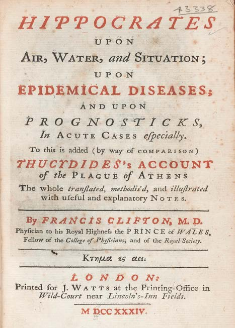

Módulo 3 | Aula 1
Abordagens teóricas da Geografia da Saúde
Introdução
A ideia de que o território é um componente essencial quando observamos a saúde das populações não é nova. Hipócrates (460 a.C.- 377 a.C.), médico grego, considerado Pai da Medicina na sua obra “Sobre Ares, Águas e Lugares”, enfatizou a importância do modo de vida dos indivíduos, analisando a influência dos ventos, água, solo e localização das cidades em relação ao Sol, na ocorrência de doenças (Hipócrates, 2005). Além disso, vale enfatizar que determinadas doenças ocorrem preferencialmente em locais específicos e considerar o lugar como fator determinante na ocorrência de problemas de saúde (Pessoa, 1978; Trostle, 1986).
Séculos depois, entre o XVII e XVIII, o conceito de saúde pública surgiu na Europa em meio ao crescimento urbano e às epidemias. A necessidade de organizar os espaços e enfrentar altas taxas de mortalidade levou ao reconhecimento da saúde como um direito coletivo, sempre associado a ações territorializadas e ao uso do espaço como elemento essencial no planejamento sanitário (Najar & Marques, 1998).
Hipócrates e a relação entre ambiente e saúde
Em sua obra “Sobre Ares, Águas e Lugares”, escreveu como o ambiente influencia a ocorrência das doenças. Lançou como principais ideias:
- Influência do meio ambiente: defendia que o clima, os ventos, a qualidade da água, o tipo de solo e a localização das cidades em relação ao sol afetavam a saúde das populações.
- Modo de vida: considerava hábitos, alimentação e condições sociais como elementos que interagiam com o espaço para determinar a saúde.
- Distribuição das doenças: observou que certas doenças eram mais comuns em regiões específicas, sugerindo uma relação entre geografia e padrões epidemiológicos.
Fonte: Paulus Pontius / After Peter Paul Rubens - Courtesy of the National Library of Medicine [1]., Public Domain, Wikimedia Commons

Fonte: Wellcome Images, CC BY 4.0, Wikimedia Commons